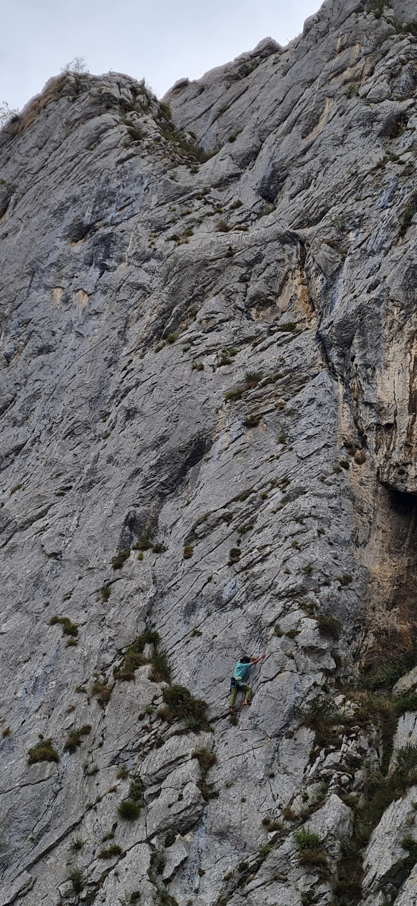
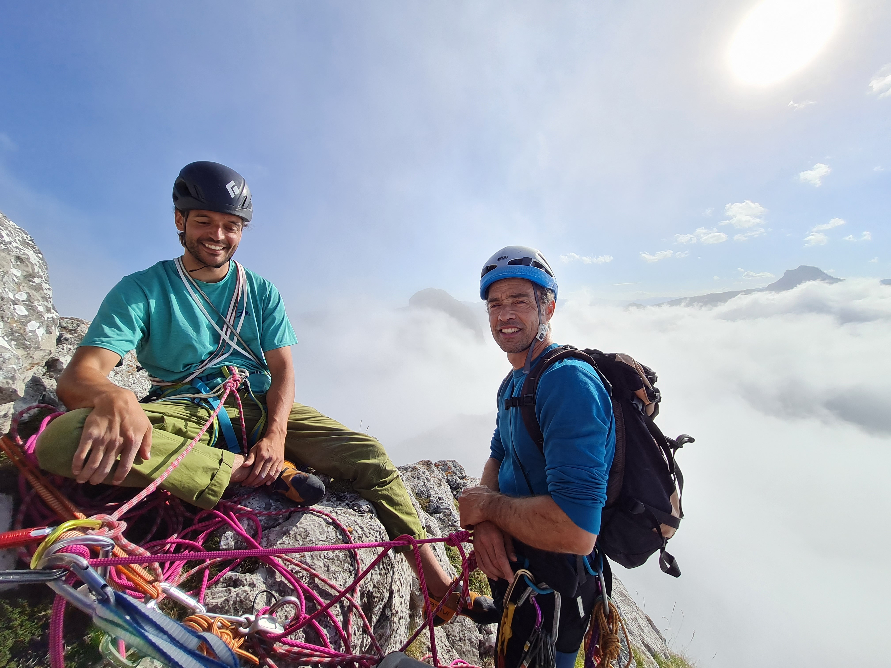
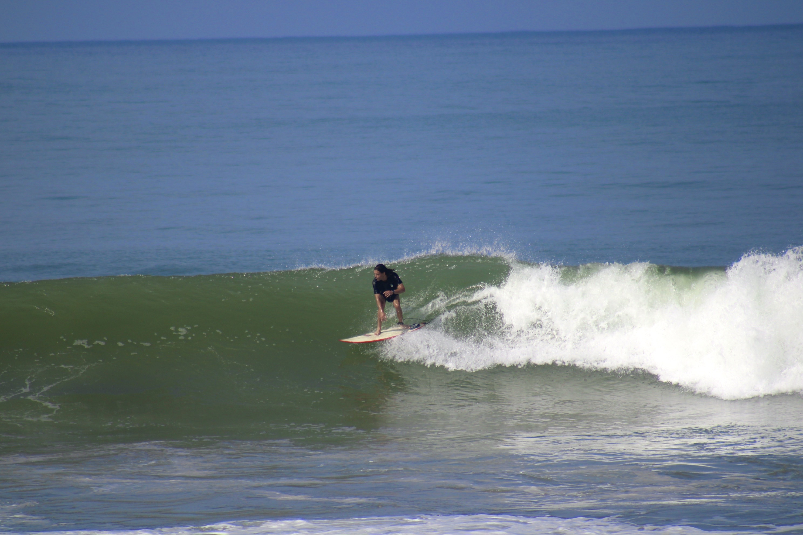

Research Bio
I completed my PhD in Delft under the supervision of Manuel Mazo in 2023, where I worked on formal methods for emergence in . During these years I spent the summer of 2022 at the University of Oxford, working with Alessandro Abate on robust reinforcement learning problems. My research has ranged from mean-field approximations for biologically inspired agents (paper) to communication-induced uncertainty in multi-agent systems (paper) and verifiable robustness in RL (paper).
After that, I was a postdoctoral researcher at the University of Oxford under the supervision of Michael Wooldridge, Ani Calinescu and Doyne Farmer, where I worked on risk awareness and information-theoretic decision making in AI agents, and a senior research scientist at Phaidra working on world models, RL and objective mismatch.
Selected Publications
-
NeurIPS 2025
Emergent Risk Awareness in Rational Agents under Resource Constraints
Abstract
Advanced reasoning models with agentic capabilities (AI agents) are deployed to interact with humans and to solve sequential decision-making problems under (often approximate) utility functions and internal models. When such problems have resource or failure constraints where action sequences may be forcibly terminated once resources are exhausted, agents face implicit trade-offs that reshape their utility-driven (rational) behaviour. Additionally, since these agents are typically commissioned by a human principal to act on their behalf, asymmetries in constraint exposure can give rise to previously unanticipated misalignment between human objectives and agent incentives. We formalise this setting through a survival bandit framework, provide theoretical and empirical results that quantify the impact of survival-driven preference shifts, identify conditions under which misalignment emerges and propose mechanisms to mitigate the emergence of risk-seeking or risk-averse behaviours. As a result, this work aims to increase understanding and interpretability of emergent behaviours of AI agents operating under such survival pressure, and offer guidelines for safely deploying such AI systems in critical resource-limited environments.
-
Position paper · 2026
Safe AI Should be Bounded and Multi-Agent
Abstract
Major developments in frontier AI systems over the last decade have been driven by the scaling paradigm, which treats resource constraints as key obstacles to be overcome in the pursuit of more capable systems. Here, we argue for a complementary paradigm that embraces these constraints—together with the multi-agent, distributed nature of real-world deployments—as a route towards safe and scalable AI. Rather than scaling individual agents alone, we posit that legibly composing agents while deliberately bounding their capabilities, affordances, and resource budgets can reliably yield system-level competence. We call such systems bounded multi-agent systems (BMAS). Our position is that bounded agency should be a foundational principle for scaling towards safe, robust, and equitable AI. This motivates a research agenda to formally characterise bounded agency, design legible interfaces and institutions for agent ecosystems, and evaluate when bounded modular systems are more appropriate than monolithic systems.
-
NeurIPS 2025 Workshop
Bayesian Decision Making around Experts
Abstract
Complex learning agents are increasingly deployed alongside existing experts, such as human operators or previously trained agents. However, it remains unclear how a learner should optimally incorporate certain forms of expert data, which may differ in structure from the learner's own action-outcome experiences. We study this problem in the context of Bayesian multi-armed bandits, considering: (i) offline settings, where the learner receives a dataset of outcomes from the expert's optimal policy before interaction, and (ii) simultaneous settings, where the learner must choose at each step whether to update its beliefs based on its own experience, or based on the outcome simultaneously achieved by an expert. We formalize how expert data influences the learner's posterior, and prove that pretraining on expert outcomes tightens information-theoretic regret bounds by the mutual information between the expert data and the optimal action. For the simultaneous setting, we propose an information-directed rule where the learner processes the data source that maximizes their one-step information gain about the optimal action. Finally, we propose strategies for how the learner can infer when to trust the expert and when not to, safeguarding the learner for the cases where the expert is ineffective or compromised. By quantifying the value of expert data, our framework provides practical, information-theoretic algorithms for agents to intelligently decide when to learn from others.
-
TMLR 2025
Predictable Reinforcement Learning Dynamics through Entropy Rate Minimization
Abstract
In Reinforcement Learning (RL), agents have no incentive to exhibit predictable behaviours, and are often pushed (through e.g. policy entropy regularisation) to randomise their actions in favour of exploration. This often makes it challenging for other agents and humans to predict an agent's behaviour, triggering unsafe scenarios (e.g. in human-robot interaction). We propose a novel method to induce predictable behaviour in RL agents, termed Predictability-Aware RL (PARL), employing the agent's trajectory entropy rate to quantify predictability. Our method maximizes a linear combination of a standard discounted reward and the negative entropy rate, thus trading off optimality with predictability. We show how the entropy rate can be formally cast as an average reward, how entropy-rate value functions can be estimated from a learned model and incorporate this in policy-gradient algorithms, and demonstrate how this approach produces predictable (near-optimal) policies in tasks inspired by human-robot use-cases.
Full list on Google Scholar.
News
- Our proposal (co-led with Nick Bishop, David Hyland, Joel Dyer and Michael Wooldridge) has been awarded a UK AISI Alignment Fund grant. We will be working on how to develop bounded intelligence that composes into safe and general multi-agent AI systems.
- Our paper (led by Alvaro Serra) on better priors for model-based RL has been accepted at ICML 2026. Preprint here.
- Our paper on emerging risk awareness and alignment shifts for agents under resource pressure has been accepted at NeurIPS 2025. Preprint here.
- Two papers accepted at the Reliable ML from Unreliable Data workshop at NeurIPS 2025: Bayesian Decision Making around Experts and Sandbagging in a Simple Survival Bandit Problem (led by Joel Dyer).
Earlier news
- Our paper (co-led with Joel Dyer and Nick Bishop) on learning uninformed priors for simulation models has been accepted at ICML 2025.
- Our paper (co-led with Giannis Delimpaltadakis) on predictability in RL agents has been accepted at TMLR.
- Our paper (led by Roman Chiva Gil) on implicit cooperation of multi-agent planning agents via predictability awareness has been accepted at AAMAS 2025.
- Our paper (co-led with Joel Dyer and Nick Bishop) on model exploration via entropy maximisation of marginal likelihood functions has been accepted at the NeurIPS 2024 Workshop on Data-driven and Differentiable Simulations, Surrogates, and Solvers.
- I joined the University of Oxford as a postdoctoral researcher, working with Prof. Michael Wooldridge, Ani Calinescu and Doyne Farmer on ML for ABMs.
- Our paper on lexicographic robustness in RL was selected for oral presentation at L4DC 2024.
- I started a postdoc position at the Cognitive Robotics department in TU Delft, working in the Autonomous Robots Lab with Dr. Javier Alonso Mora and Dr. Jens Kober on risk-aware decision making for autonomous navigation problems.
- Finished my PhD thesis. You can find it here.
Links & Contact
Outdoor
Photos



